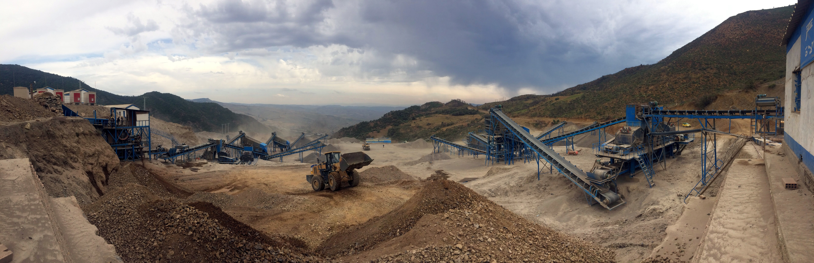

Kenya's Economy to benefit from Mining Engineering Graduates
Relatively untapped mining sector needs expertise
Kenya is a young nation when it comes to mining. In recent years, mineral reosurces such as coal, oil, and gold have been discovered yet the country has little skilled labor to assist in the extraction of these resources. However, universities like the Jomo Kenyatta University of Agriculture and Technology (JKUAT) have been rolling out mining and mineral processing engineering graduates who are expected to provide the necessary expertise for the industry. These graduates can help Kenya tap into its mineral export potential, which will enhance foreign exchange.
The graduates will also come in handy and in line with recent government measures to finish mapping key resources for extraction.The Cabinet Secretary for Mining, Blue Economy and Maritime Affairs Salim Mvurya, noted the conclusion of the National Airborne Geophysical survey and generation of a preliminary report identifying over 970 mineral occurrences across the country. These identified resources will need the country to have the necessary skills to take advantage of the resources and extract them safely.
Benefits of Mining Engineers to the kenyan sector
Mining engineers are responsible for overseeing the extraction of subterranean resources such minerals, metals, oil, and gas in a manner that is both secure and productive. In this case, mining engineers in kenya will ensure the typical dangerous process of extraction is safe. This benefit is crucial as mining hazards can be incredibly catastrophic.

Lastly, the graduating mining engineers will ensure that future jobs in the sector remain domestic. Too many times developing countries with rich resources are forced to hire expatriates, which does not directly assist with the nations high unemployment. In this regard, having these kenyan engineers in the industry will ensure that employment problems are addressed and local skill transfer is enhanced. Therefore, Kenya's economy will seek high benefits and improvements once locally trained mining engineers start dominating the industry.